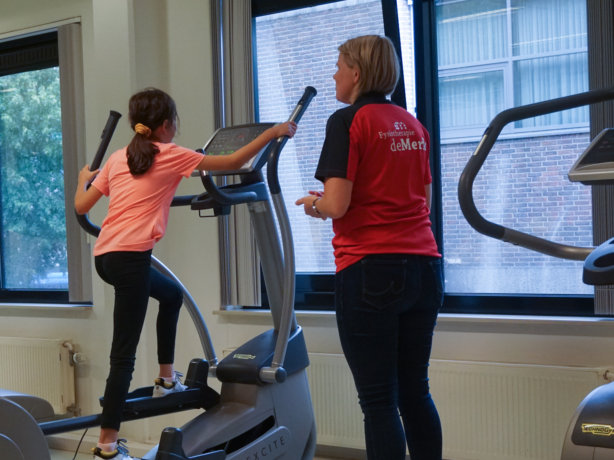

Fitkidsprogramma
Fitkids is een fitness- en oefenprogramma opgezet door Stichting Fitkids voor kinderen van zes tot achttien jaar met een chronische ziekte, beperking of langdurige aandoening. De kinderen trainen en bewegen gedurende een half jaar tot een jaar onder begeleiding van een kinderfysiotherapeut. Tijdens een Fitkids-behandeling wordt er zowel individueel op fitnessapparatuur, als in groepsverband getraind. In groepsverband is er de mogelijkheid om in het traject allerlei soorten sport en spel toe te voegen.
Waarom Fitkids?
Met behulp van een Fitkids-traject worden kinderen op een dusdanige manier begeleidt dat ze ontdekken dat bewegen leuk en goed voor je is. Voor ieder kind worden er individuele doelen gesteld, waarbij er gewerkt wordt aan de verbetering van de fysieke en mentale conditie. Het uiteindelijke doel van dit traject zal zijn dat ze doorstromen naar een zelf uitgezochte sportclub.

Opvang, adoptie en afstand Konijnen en cavia’s die om verschillende redenen niet meer bij hun laatste eigenaar kunnen wonen, worden hier opgevangen en begeleid naar een nieuw huisje. Gelukkig weten ook mensen die een dier willen adopteren ons steeds beter te vinden waardoor de dieren over het algemeen niet lang bij ons hoeven te verblijven. In de periode dat ze wél bij ons verblijven doen wij er alles aan om konijnen weer echt konijn te laten zijn. Ze worden natuurlijk voorzien van hun natje en droogje en een schoon hok. Als de weersomstandigheden dat toelaten mogen ze elke dag buiten rennen en spelen. Ook krijgen ze aandacht en werken we met getraumatiseerde maar ook met jonge dieren aan (her)socialisatie.
Voor meer informatie over de Fitkids-stichting kunt u terecht op www.fitkids.nl. Voor een Fitkids traject kunnen kinderen uit Joure en omgeving terecht bij kinderfysiotherapeuten Judith en Nynke (Z).